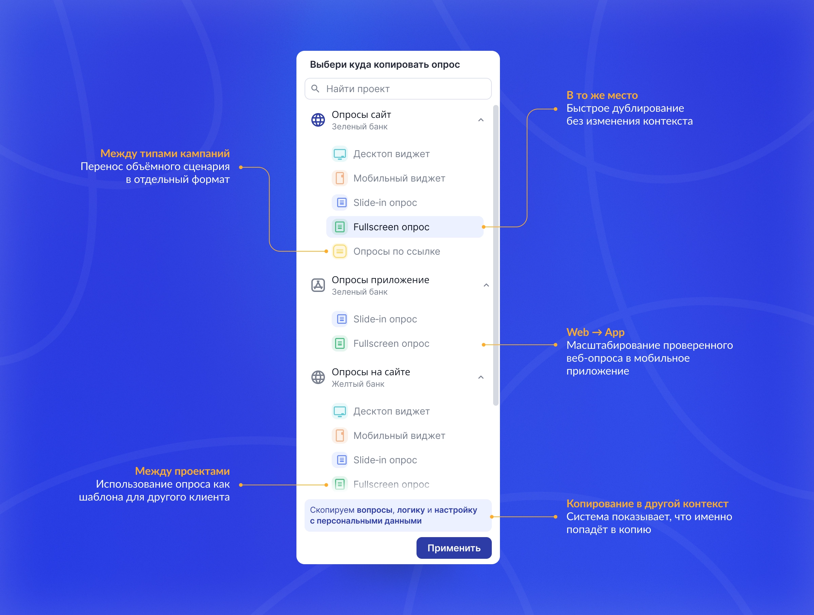
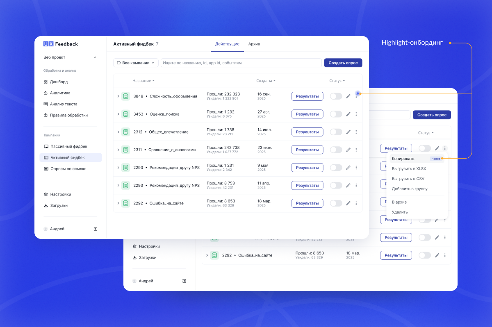

Бизнес‑цель
Снизить трудозатраты команды поддержки при запуске опросов у клиентов.
В платформе UX Feedback клиенты создают опросы в разных форматах: на сайте, в мобильном приложении и на отдельной странице. Менеджеры поддержки клиентов и исследователи часто настраивают кампании вручную.
Когда нужно перенести готовый опрос в другой проект или другой формат, приходилось пересобирать всё заново: вопросы, страницы, логику, настройки. Это занимало много времени и вело к ошибкам.
Снизить трудозатраты команды поддержки при запуске опросов у клиентов.
Сократить количество ручных шагов при переносе кампаний между проектами и форматами.
Если позволить пользователям копировать кампании в любое место внутри платформы с учётом ограничений каждого формата, то количество ручных операций при запуске опросов уменьшится, а перенос станет предсказуемым и контролируемым.
Что сделал: Спроектировал управляемое копирование кампаний с выбором проекта и типа, включая дефолтный и расширенный сценарии.
Зачем: Пользователи копируют кампании для масштабирования, смены формата и повторного использования шаблонов. Без явного выбора проекта и типа копию приходилось собирать заново.
Итог: Пользователь быстрее запускает опросы, а система предотвращает ошибки за счёт встроенных правил.

Что сделал: Как часть системного онбординга новых фич добавил знакомство с обновлением через пульсар у первой кампании и метку «Новое» в меню.
Зачем: Нужно было сделать фичу заметной сразу, не прерывая основной сценарий.
Итог: Функция стала видимой с первого захода и не отвлекала от работы.

Что сделал: Сформировал правила копирования кампаний между типами и проектами: что переносим, что сбрасываем и почему.
Зачем: Типы кампаний и проекты поддерживают разные настройки. Без правил копия могла работать иначе: ломалась логика или появлялись скрытые зависимости.
Итог: Пользователь заранее понимает результат копирования. Разработка получила однозначные правила и реализовала фичу без расхождений.